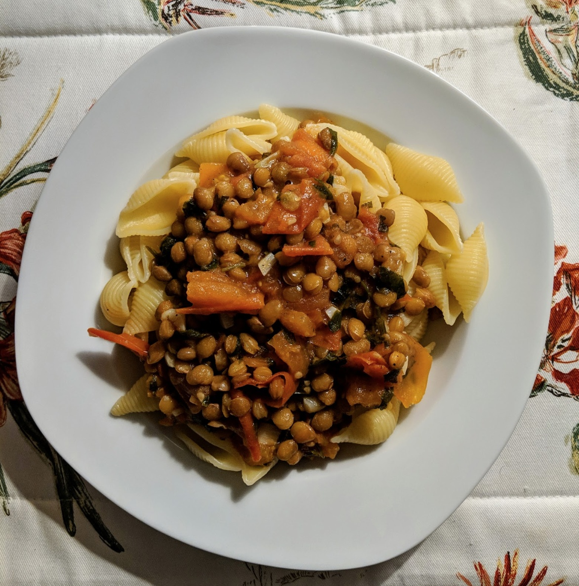

Pasta with lentils
yes please.

Ingredients
- 350g ditaloni
- 230g dry lentils (or 2 tins if you're lazy)
- 5 cloves of garlic
- 5-6 tomatoes
- 1 large bunch of parsley
- Olive oil and black pepper
- Boil lentils in a pot of water for about 30 minutes until soft but still firm.
- In a separate large pan, braise chopped garlic in olive oil before adding chopped tomatoes and
chopped parsley.
- Simmer until a sauce is formed, about 15min (adding salt and black pepper to taste).
- Boil the pasta water and cook the pasta as per the required time, remembering to salt the water
once the pasta is in.
- Add in lentils (once they are cooked!). Combine with pasta and add more olive oil if needed.
Serves 5.